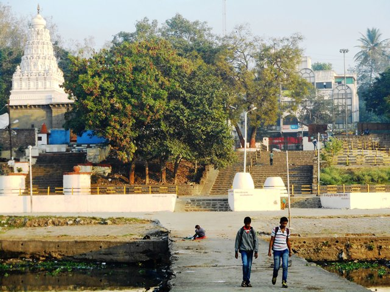
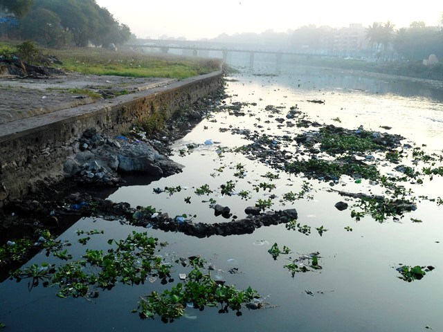

Growth and expansion along with aggressive urbanisation and industralisation have taken their toll, and the city seems to have lost its connection with the river. A recent water quality report by the MPCB has found the Mutha to be one of the most polluted rivers along with Pavana, Indrayani and Bhima rivers in Pune district. The quality of the river water has undergone serious levels of deterioration due to heavy loads of domestic sewage and some amount of industrial waste that continue to be deposited in the river.
The Panshet dam burst in 1961 and washed away many of the ghats around the river. No attempt was made later to restore them and the river gradually lost its connection with the people, or vice versa. Only seven of the fourteen ghats remain now, and those too are poorly maintained. Of these, the Riddheshwar-Siddheshwar ghat from where the walk starts is unique with two temples of Lord Mahadev facing each other.

Some old pictures that the hosts have provide a glimpse of the large expanse of this once majestic, free-flowing river. A rich variety of birds such as Pied Kingfisher, River Tern, Little Grebe and Pheasant tailed Jacana dominated the surroundings because of a rich supply of fish in the full river. Now dammed at two places, it appears nothing less than a drainage as a number of pipes are seen opening into the river waters carrying all the sewage from the city, most of which is untreated as the city has the capacity to treat only 50% of the sewage it generates.
One look at the waters full of waste, garbage bags, cans, plastic bags and foam full of water hyacinth provides evidence that the death of the river is inevitable unless some action is taken. The beneficiaries of the degraded state of the river include scavenging birds and animals such as pond herons, crows and black kites along with packs of dogs roaming along its banks.

Around 50 years ago, there was so much water in the river that it was possible to jump off a bridge on the river and swim towards the ghats in the city. Now, channelisation has reduced its flow and no attempt is being made to retain even a minimum amount of water. This has taken away from the river water being able to meet some of the city's water needs.
Social activist Dr. Narendra Dabholkar started initiatives to prevent the river from choking further by trying to stop Ganesh Visarjan in the river. The movement has spread like wildfire and for the first time this year, the five main Ganesh idols--the pride of Pune city--were immersed in tanks rather than the rivers. "Change needs to start at the grassroot level. Only when this happens can policy level changes happen", says Manish.
Manish Ghorpade and Prajakta Panshikar add, "We want this walk to help to bring people together to look at their river, connect to her, understand her importance for our own existence, and help to do their bit to change her condition. We believe that the best way for change to happen is to start by actually visiting the place where it is needed to happen, where the river actually exists, to know and connect with how it evolved along with civilisations and humans. Then the seeds of change are sown in the minds of the people".